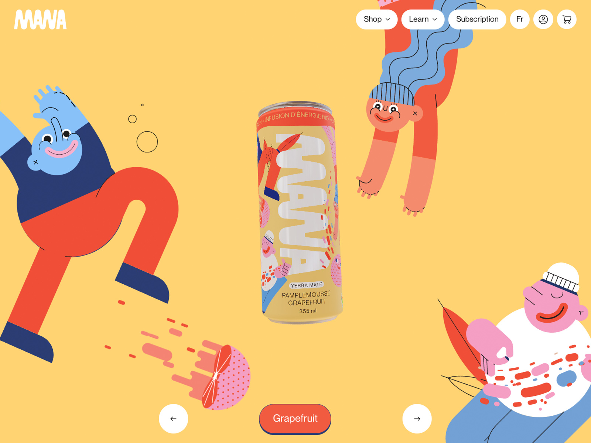
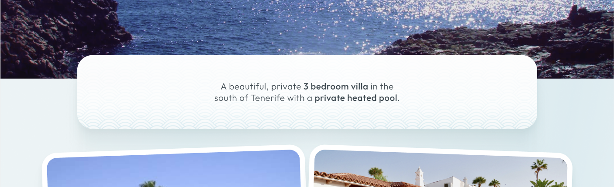

This week we'll explore two powerful CSS techniques: background images for adding visual depth to your designs, and Flexbox - the modern way to create flexible, responsive layouts that arrange content side-by-side or in any direction you need.
3-Hour Session Structure
🕐 Part 1: CSS Background Images (60 mins)
- Background images vs HTML images
- background-image property
- background-repeat, background-size, background-position
- Background shorthand
- Exercise 1: Experiment with background properties
🕑 Part 2: Introduction to Flexbox (60 mins)
- What is Flexbox and why use it?
- Flex containers vs flex items
- Essential properties: display, flex-direction, justify-content, align-items, gap
- The flex property
- Exercise 2: Create a card layout with Flexbox
☕ Break (15 mins)
🕒 Part 3: Practical Flexbox & Portfolio Task (45 mins)
- Two-column layouts with Flexbox
- Navigation bars with Flexbox
- Exercise 3: Build a navigation bar
- Portfolio Task: Enhance Leeds Attractions page with background images and Flexbox
CSS Background Images

In Week 2, we learned about adding background colors to elements. Now we'll take it further by learning how to add background images to make your designs more visually appealing.
CSS Background Images vs HTML Images - When to Use Each
Before we dive into the technical details, it's crucial to
understand
when to use CSS background images versus
HTML <img> elements. This
decision affects accessibility, SEO, and best practices.
Use HTML <img> elements when:
- The image conveys information - Product photos, diagrams, infographics, portraits
- The image is content - Anything users need to see to understand the page
- Screen readers should describe it - Any image that needs an alt text description
- Search engines should index it - Images that are relevant to your page content
- Users might want to save/share it - Right-click to download, print, etc.
<!-- HTML image - content that matters -->
<img src="product-photo.jpg" alt="Blue cotton t-shirt with round neck">Use CSS background images when:
- The image is purely decorative - Patterns, textures, gradients
- The image is for visual design only - Page backgrounds, subtle textures
- The image doesn't convey information - Abstract patterns, color fills
- Removing it wouldn't affect understanding - The page still makes sense without it
- It's part of the styling, not content - Design elements that enhance but don't inform
/* CSS background - decorative only */
body {
background-image: url('subtle-pattern.png');
}⚠️ Accessibility Matters
CSS background images are
invisible to screen readers and cannot have alt
text. If a user needs to know about an image to understand your
content, it must be an HTML <img>
element with proper alt text. This isn't just good practice - it's
essential for making the web accessible to everyone.
The background-image Property
The background-image property allows you to set an
image as the background of any HTML element. The syntax uses the
url() function:
body {
background-image: url('images/pattern-bg.png');
background-repeat: repeat;
}File Paths for Background Images
Background images use relative paths from your CSS file location:
-
url('images/photo.jpg')- looks in an "images" folder next to your CSS file -
url('../images/photo.jpg')- goes up one folder, then into "images" -
url('photo.jpg')- looks in the same folder as your CSS file
background-repeat
By default, background images will tile (repeat)
both horizontally and vertically to fill the entire element. You can
control this with background-repeat:
/* No tiling - show image once */
.element {
background-image: url('pattern.png');
background-repeat: no-repeat;
}
/* Repeat horizontally only */
.element {
background-repeat: repeat-x;
}
/* Repeat vertically only */
.element {
background-repeat: repeat-y;
}
/* Repeat both ways (default) */
.element {
background-repeat: repeat;
}Live Example - Background Repeat:
background-size
The background-size property controls how large the
background image appears. This is crucial for responsive design:
/* Cover the entire element (may crop image) */
.section {
background-image: url('texture.jpg');
background-size: cover;
background-repeat: no-repeat;
}
/* Fit entire image inside element (may show empty space) */
.decorative-box {
background-size: contain;
background-repeat: no-repeat;
}
/* Specific dimensions */
.pattern-box {
background-size: 200px 100px;
}
/* Percentage of container */
.texture {
background-size: 50% 50%;
}Cover vs Contain
- cover - Scales the image to cover the entire element. The image may be cropped, but there will be no empty space. Useful for filling sections with textures.
- contain - Scales the image to fit entirely within the element. The entire image is visible, but there may be empty space. Good for decorative elements or patterns.
Live Example - Background Size:
background-position
Control where the background image is positioned within the element:
/* Keywords */
.element {
background-position: center;
background-position: top right;
background-position: bottom left;
}
/* Percentages */
.element {
background-position: 50% 50%; /* center */
background-position: 0% 100%; /* bottom left */
}
/* Pixels */
.element {
background-position: 20px 50px;
}Live Example - Background Position:
Background Shorthand
Just like padding and margin, you can write all background properties in one line:
/* Longhand */
body {
background-image: url('pattern.png');
background-repeat: repeat;
background-position: center;
background-size: 200px 200px;
}
/* Shorthand - more concise! */
body {
background: url('pattern.png') repeat center / 200px 200px;
}
/* With a fallback color */
body {
background: #f5f5f5 url('pattern.png') repeat center / 200px 200px;
}Best Practice: Always Include Fallback Colors
Always include a background color when using background images. This ensures the page looks good if the image fails to load:
body {
background: #f5f5f5 url('pattern.png') repeat;
}Multiple Background Images
CSS allows you to layer multiple background images on a single element. They stack from front to back in the order you list them:
.layered {
background:
url('foreground.png') no-repeat center top,
url('middle.png') repeat-x center,
url('background.jpg') no-repeat center / cover;
}Practical Use Cases for Background Images
- Page Backgrounds - Subtle patterns or textures for entire pages
- Card Backgrounds - Decorative patterns behind content cards
- Section Backgrounds - Textured backgrounds for page sections
- Decorative Elements - Small graphics that are purely decorative
- Repeated Patterns - Tiled textures for visual interest
Real Student Example:

Some excellent 2nd year work showing subtle background texture added to a text box using background-image property
📝 Exercise 1 - Add a Background Pattern to a Page
Getting Started
- Download class-exercises.zip from today's tutorial folder on MyBeckett
- Unzip the folder
- Drag the unzipped class-exercises folder onto VS Code
- Open the exercise-1-background folder
Practice using background images by adding a decorative pattern to the background of a webpage. You'll work with background properties to create visual interest without affecting accessibility.
In this exercise you'll practice:
- Adding a decorative background pattern to the page body
- Using background-repeat to tile the pattern
- Controlling pattern appearance with background-size
- Ensuring content remains readable with proper background colors
Follow the instructions in the README.md file and the comments in styles.css to experiment with different background properties.
💡 Hint
For subtle patterns, use a semi-transparent PNG or set a low opacity:
body {
background-color: #f5f5f5;
background-image: url('pattern.png');
background-repeat: repeat;
background-size: 200px 200px;
}Introduction to Flexbox

Flexbox (Flexible Box Layout) is a modern CSS layout system that makes it easy to arrange elements in rows or columns. Before Flexbox, creating side-by-side layouts was complicated and often required workarounds. Flexbox makes this simple and intuitive.
What Problem Does Flexbox Solve?
Remember how we learned that block elements like
<div> stack vertically by default? What if you
want two divs to sit side-by-side? Flexbox makes this easy:
/* Without Flexbox - divs stack vertically */
<div class="box">Box 1</div>
<div class="box">Box 2</div>
<div class="box">Box 3</div>
/* Result: Boxes stack on top of each other *//* With Flexbox - divs sit side-by-side */
.container {
display: flex;
}
<div class="container">
<div class="box">Box 1</div>
<div class="box">Box 2</div>
<div class="box">Box 3</div>
</div>
/* Result: Boxes sit next to each other horizontally */Key Flexbox Concepts
Flexbox involves two types of elements:
-
Flex Container - The parent element with
display: flex; - Flex Items - The direct children of the flex container
Live Example - Basic Flexbox:
Notice how just adding display: flex; to the container
changes the layout from vertical stacking to horizontal
side-by-side!
Essential Flexbox Properties
flex-direction
Controls the direction flex items flow. Default is
row (horizontal):
.container {
display: flex;
flex-direction: row; /* left to right (default) */
flex-direction: row-reverse; /* right to left */
flex-direction: column; /* top to bottom */
flex-direction: column-reverse; /* bottom to top */
}Live Example - Flex Direction:
justify-content
Controls how items are distributed along the main axis (horizontally for rows):
.container {
display: flex;
justify-content: flex-start; /* items at start (default) */
justify-content: flex-end; /* items at end */
justify-content: center; /* items centered */
justify-content: space-between; /* space between items */
justify-content: space-around; /* space around items */
justify-content: space-evenly; /* equal space between */
}Live Example - Justify Content:
align-items
Controls how items are aligned along the cross axis (vertically for rows):
.container {
display: flex;
align-items: stretch; /* items stretch to fill (default) */
align-items: flex-start; /* items at top */
align-items: flex-end; /* items at bottom */
align-items: center; /* items centered vertically */
}Live Example - Align Items:
gap
Creates space between flex items without using margins (modern and convenient!):
.container {
display: flex;
gap: 20px; /* 20px space between all items */
gap: 10px 20px; /* 10px vertical, 20px horizontal */
}Live Example - Gap:
Controlling Individual Flex Items
flex
The flex property controls how much space a flex item
should take up relative to other items:
.container {
display: flex;
}
/* Each box takes equal space */
.box {
flex: 1;
}
/* Main content takes twice as much space as sidebars */
.sidebar {
flex: 1;
}
.main-content {
flex: 2;
}Live Example - Flex Property:
flex: 1
flex: 2
flex: 1
Notice how flex: 2 makes the main content take up twice
as much space as the sidebars with flex: 1.
Understanding flex Values
The flex property is actually shorthand for three
properties, but for beginners, think of it like this:
-
flex: 1;- "Take up 1 unit of available space" -
flex: 2;- "Take up 2 units of available space" -
flex: 0;- "Don't grow, stay at natural size"
If you have three items with flex: 1, they each get
1/3 of the space. If one has flex: 2 and two have
flex: 1, the first gets 2/4 (half) and the others get
1/4 each.
📝 Exercise 2 - Create a Card Layout with Flexbox
Open the exercise-2-cards folder in today's class-exercises.zip file. Follow the TODO instructions to complete the card layout.
Practice using Flexbox to create a responsive card layout. You'll arrange cards side-by-side and control their spacing and alignment.
In this exercise you'll practice:
- Creating a flex container to hold cards
- Using justify-content and align-items to position cards
- Adding gap for spacing between cards
- Using flex-wrap to make cards wrap to new lines
Responsive Flexbox with flex-wrap
By default, flex items try to fit on one line. Use
flex-wrap to allow items to wrap to new lines on
smaller screens:
.container {
display: flex;
flex-wrap: wrap; /* items wrap to new lines */
flex-wrap: nowrap; /* items stay on one line (default) */
gap: 20px;
}
.item {
flex: 1 1 300px; /* grow, shrink, minimum 300px width */
}Live Example - Flex Wrap (resize your browser):
Common Flexbox Layout Patterns
Here are some typical uses for Flexbox:
- Navigation bars - Horizontal menu items with space between
- Card grids - Equal-width cards that wrap responsively
- Sidebar layouts - Fixed sidebar with flexible main content
- Centering content - Both horizontally and vertically
- Footer alignment - Stick footer to bottom of page
Practical Example: Two-Column Layout
Let's create a classic two-column layout with a sidebar and main content area:
/* HTML */
<div class="page-layout">
<aside class="sidebar">
<h3>Sidebar</h3>
<ul>
<li>Link 1</li>
<li>Link 2</li>
<li>Link 3</li>
</ul>
</aside>
<main class="main-content">
<h2>Main Content</h2>
<p>This is the main content area...</p>
</main>
</div>
/* CSS */
.page-layout {
display: flex;
gap: 30px;
max-width: 1200px;
margin: 0 auto;
padding: 20px;
}
.sidebar {
flex: 0 0 250px; /* Don't grow, don't shrink, stay 250px */
background: #f8f9fa;
padding: 20px;
border-radius: 8px;
}
.main-content {
flex: 1; /* Take up remaining space */
background: white;
padding: 20px;
}Live Example - Two-Column Layout:
Main Content Area
This is the main content area that takes up the remaining space. The sidebar stays at a fixed 200px width while this area grows to fill the rest.
This is a classic layout pattern used in many web applications, dashboards, and blogs.
📝 Exercise 3 - Build a Navigation Bar with Flexbox
Create a professional navigation bar using Flexbox. You'll practice aligning items, spacing them appropriately, and making the navigation responsive.
In this exercise you'll practice:
- Creating a horizontal navigation with flex
- Using justify-content: space-between; to position logo and menu
- Using align-items: center; to vertically align items
- Making the navigation responsive with media queries
Open the exercise-3-navigation folder in today's class-exercises.zip file. Follow the TODO instructions to complete the navigation bar.
💡 Hint - Nested Flex Containers
You can have flex containers inside flex containers! For example, the nav itself can be a flex container, and the menu list inside it can also be a flex container:
.navbar {
display: flex;
justify-content: space-between;
}
.menu {
display: flex;
gap: 20px;
}Flexbox Quick Reference
Container Properties (apply to parent)
-
display: flex;- Makes element a flex container -
flex-direction:- row, column, row-reverse, column-reverse -
justify-content:- flex-start, center, flex-end, space-between, space-around -
align-items:- flex-start, center, flex-end, stretch gap:- Space between itemsflex-wrap:- wrap, nowrap
Item Properties (apply to children)
-
flex:- How much space item should take (e.g., 1, 2, 0) flex: 1 1 300px;- Grow, shrink, base width-
flex: 0 0 250px;- Fixed width (don't grow or shrink)
📚 Further Flexbox Resources
Here are some excellent resources to help you master Flexbox:

🎮 Flexbox Froggy
Help frogs reach their lily pads using Flexbox properties. A fun, interactive game to practice what you've learned!

📖 CSS-Tricks Flexbox Guide
A comprehensive visual reference poster showing all Flexbox properties. This is a handy visual reference of all the flexbox properties - perfect to bookmark or print out!
Portfolio Task - Leeds Attractions Enhancement
For this week's skills portfolio task, you'll enhance last week's Leeds Attractions page by adding CSS background images and Flexbox layouts. You'll create a custom background image in Illustrator and use Flexbox to create side-by-side layouts.
Requirements:
-
Open Your Existing Leeds Attractions Page
- Open your leeds-attractions.html and leeds-attractions.css files from last week
- You'll be building on the work you've already completed
-
Create a Custom Background Image in Illustrator:
- Open Adobe Illustrator and create a new document (1920px × 1080px recommended)
-
Create a graphic that represents Leeds in some way - this
could be:
- An illustration of iconic Leeds landmarks (Town Hall, Corn Exchange, Armadillo)
- An abstract pattern using Leeds United colors
- A stylized cityscape silhouette
- A decorative pattern incorporating elements of Leeds culture
- Export your image as a JPG or PNG file
- Save it in an images folder
-
Add Background Image to Your Page:
-
Add your custom image using the
background-imageproperty -
Use
background-size: cover;to fill the section -
Experiment with
background-positionto position it effectively -
Try
background-attachment: fixed;for a parallax effect (optional) - Ensure text remains readable - you may need to add a semi-transparent overlay or adjust text colors/shadows
-
Add your custom image using the
-
Implement Flexbox for Side-by-Side Layout:
- Identify content on your page that would benefit from a side-by-side layout
-
Create a flex container if one doesn't
already exist:
-
Wrap your content in a container div (e.g.,
<div class="flex-container">) -
Add
display: flex;to the container in your CSS
-
Wrap your content in a container div (e.g.,
-
Use Flexbox properties to arrange content side-by-side:
-
flex-wrap: wrap;to allow wrapping on smaller screens gapfor spacing between items-
justify-contentto control horizontal alignment -
flexproperty on child elements to control their size
-
-
Good candidates for side-by-side layouts on your Leeds
Attractions page:
- Attraction cards or information blocks
- Images with accompanying text descriptions
- Multiple paragraphs of content
- Lists or content sections
Demonstration of Skills
Your enhanced Leeds Attractions page should demonstrate:
- ✅ Custom background image - Created in Illustrator and applied with CSS
- ✅ Background properties - background-size, background-position, background-repeat
- ✅ Flexbox containers - Using display: flex for side-by-side layouts
- ✅ Flex properties - justify-content, align-items, gap, flex
- ✅ Building on previous work - Enhancing existing HTML/CSS
💡 Tips for Success
- Illustrator: Keep your design simple and export at a reasonable file size (aim for under 500KB)
-
Background: If text is hard to read, add
text-shadowor a semi-transparent overlay usingbackground-color: rgba(0,0,0,0.5); - Flexbox: Start simple - wrap 2-3 items in a flex container first, then expand
Common Mistakes to Avoid
-
Forgetting
display: flex;on the parent container - Not wrapping elements in a container div before applying flexbox
-
Background images without proper
background-size- images may appear stretched or cut off - Text that's unreadable on background images - always check contrast
- Not testing how the layout looks in the browser
- Illustrator images that are too large (over 2MB) - optimize for web!
Example: Creating a Flex Container
Here's how to wrap existing content in a flex container:
<!-- BEFORE: Content stacks vertically -->
<div class="attraction">Roundhay Park</div>
<div class="attraction">Royal Armouries</div>
<div class="attraction">Leeds Art Gallery</div>
<!-- AFTER: Wrap in a flex container -->
<div class="flex-container">
<div class="attraction">Roundhay Park</div>
<div class="attraction">Royal Armouries</div>
<div class="attraction">Leeds Art Gallery</div>
</div>/* CSS for side-by-side layout */
.flex-container {
display: flex;
flex-wrap: wrap;
gap: 20px;
}
.attraction {
flex: 1 1 250px; /* grow, shrink, min-width */
}Submission: Your enhanced leeds-attractions.html and leeds-attractions.css files should remain in your skills-portfolio folder. Your tutor will review your work in next week's session.